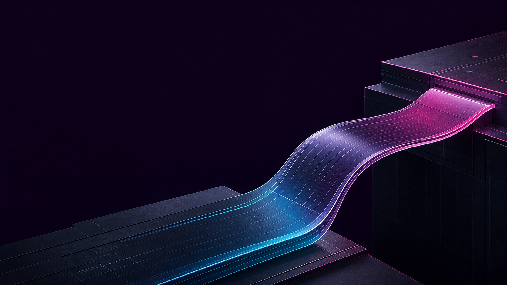
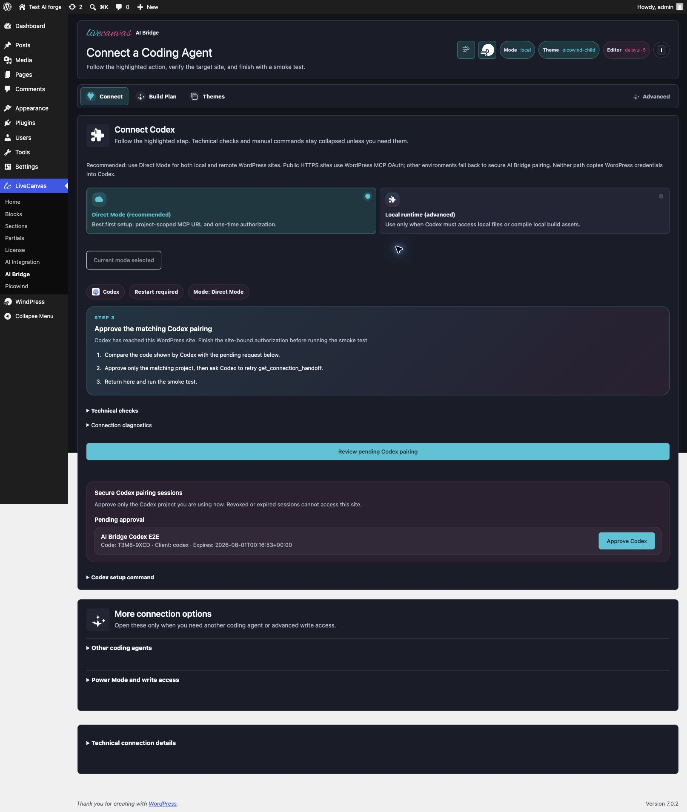
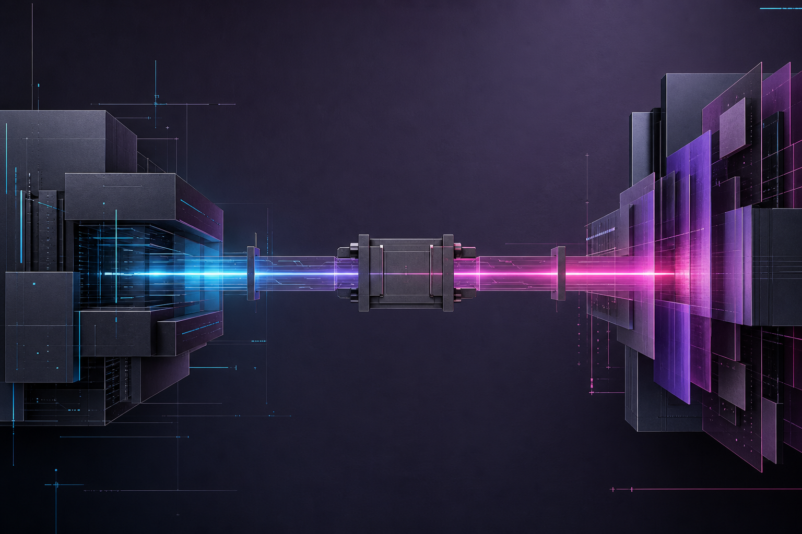
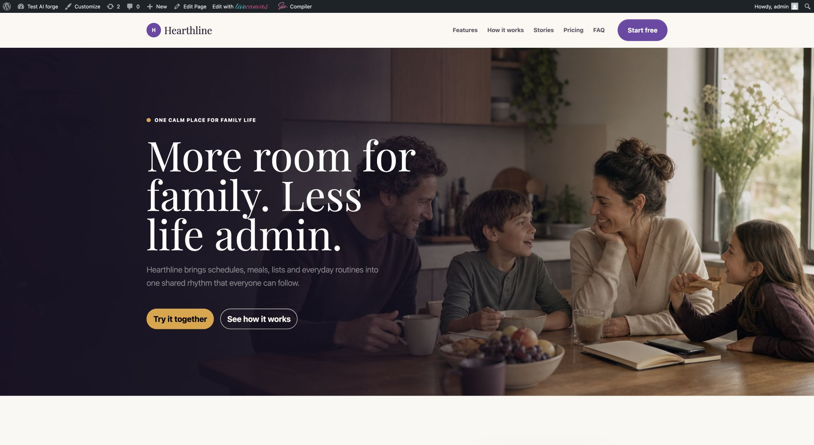
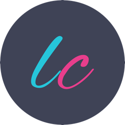

Analyze and generate
Codex, Claude, Cursor, or OpenCode reads the brief, inspects the stack, and prepares framework-native output.

Give your coding agent a verified path into WordPress and LiveCanvas. Inspect the real site, preview changes, apply structured writes, and keep rollback within reach.


A STRUCTURED EXECUTION LAYER
The coding agent analyzes the brief, reference material, and desired outcome. AI Bridge supplies real WordPress context and exposes explicit LiveCanvas operations instead of an unrestricted remote shell.
Codex, Claude, Cursor, or OpenCode reads the brief, inspects the stack, and prepares framework-native output.
Site identity, scopes, framework validation, preview, audit records, and rollback stay explicit.
Pages, partials, templates, media, and design systems remain inside the LiveCanvas workflow.
PRACTICAL BETA WORKFLOW
Use a reference for hierarchy, rhythm, and interaction ideas. Generate an original brand, copy, media, and implementation. The result is not a screenshot pasted into WordPress: it is real HTML that can still be edited in LiveCanvas.

The useful unit is not one giant prompt. It is a sequence that can be inspected, repeated, and recovered.
WHAT YOU CAN DO TODAY
AI Bridge is useful when the task has a clear target and a safe apply path. It coordinates site-aware generation and maintenance while preserving LiveCanvas structure.
Generate draft pages from a brief, preserve the global shell, attach page-specific CSS or JavaScript, and keep staging content noindex.
Preview stack-native tokens for Picostrap or Picowind, then compile the matching Sass or Tailwind workflow.
Work on headers, footers, and dynamic templates as separate LiveCanvas objects instead of embedding everything in one page.
Target unique text, selectors, classes, and attributes; review the diff; apply the exact change; retain its audit trail.
Upload original assets, build manifests, use guarded theme-file tools, and keep backups for advanced development workflows.
Run desktop and mobile visual checks, inspect overflow and browser errors, flush caches, and verify the final site state.
PUBLIC BETA
The beta is intended for developers and agencies who can review generated code, verify target identity, and test writes on staging before production use.
It is not a one-click pixel-perfect cloning service, an unsupervised production operator, or a way to bypass hosting permissions and missing build runtimes.

Connect one coding-agent project to one verified WordPress site, start read-only, and move through structured previews before any write.